S obzirom na iskustvo MI, kako se spremate za ZI? Prof je počeo komentirati rješenja u kolaborativnom dokumentu pa tu možemo pitati što nije jasno: https://docs.google.com/document/d/15drigevvwo3wOvZ3uFZgCAO2hgEHdCUa-a1DTMWV7_k/edit#heading=h.me2a23xgw8o
Stark rjesavam dz, pogledat cu kvizove s predavanja i definitivno moodle kvizove jer je na miju bilo nekoliko identicnih pitanja otamo, free bodovi
Kako bi išao postupak za zadatak iz kviza s modelima H1, H2 i H3 (rangiranje po složenosti + parametrima)?
Jesmo radili Laplaceove (zagladene) procjene ?
adidas da
Praga nema na završnom? Da budem siguran.
Jel bi trebalo znat sve one formule kod GMMa? Pitam posto mi pogled na bilo koju od njih aktivira negativne reakcije…
enaiks Kad smo već kod Moodle kvizova, nadam se da će biti online što prije. Imamo još 4 dana do ispita a trebamo imati još 3 Moodle kviza….
Kviz s moodle s rješenjima bez postupka 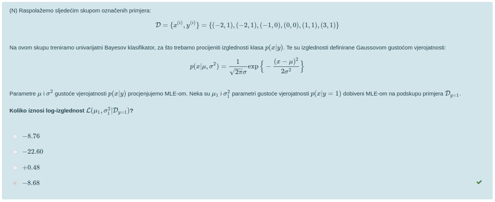 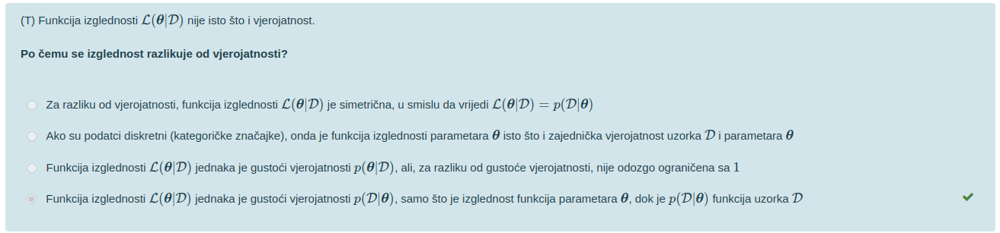 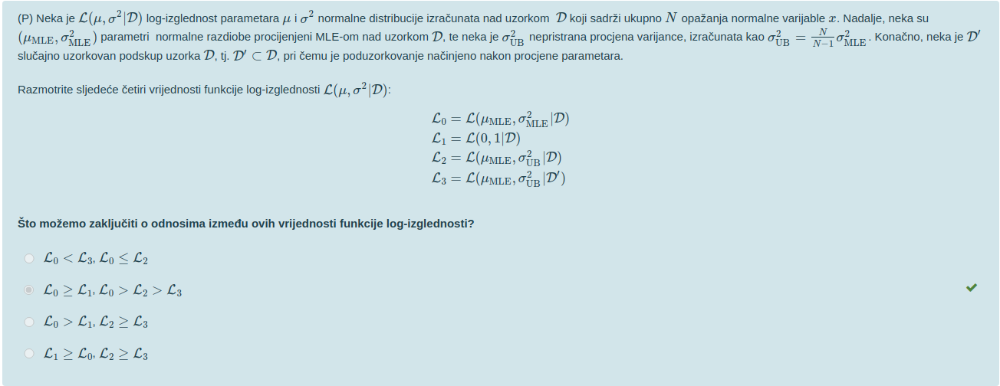 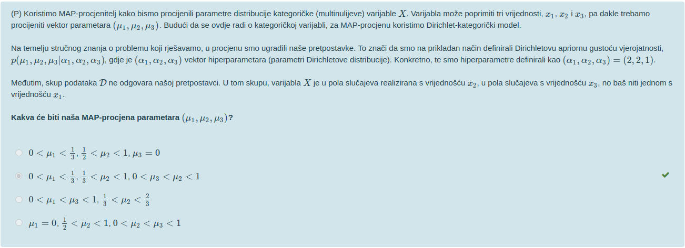 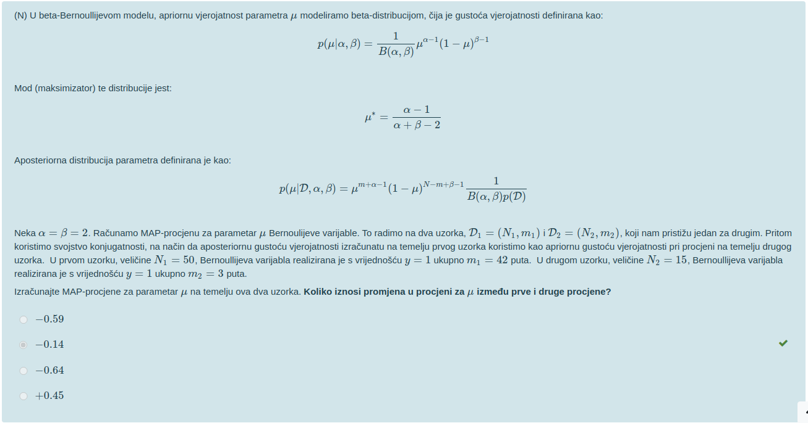 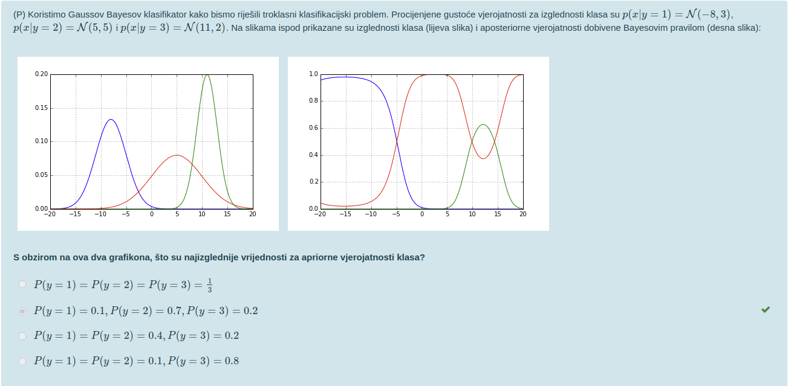 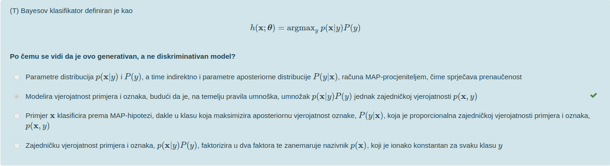 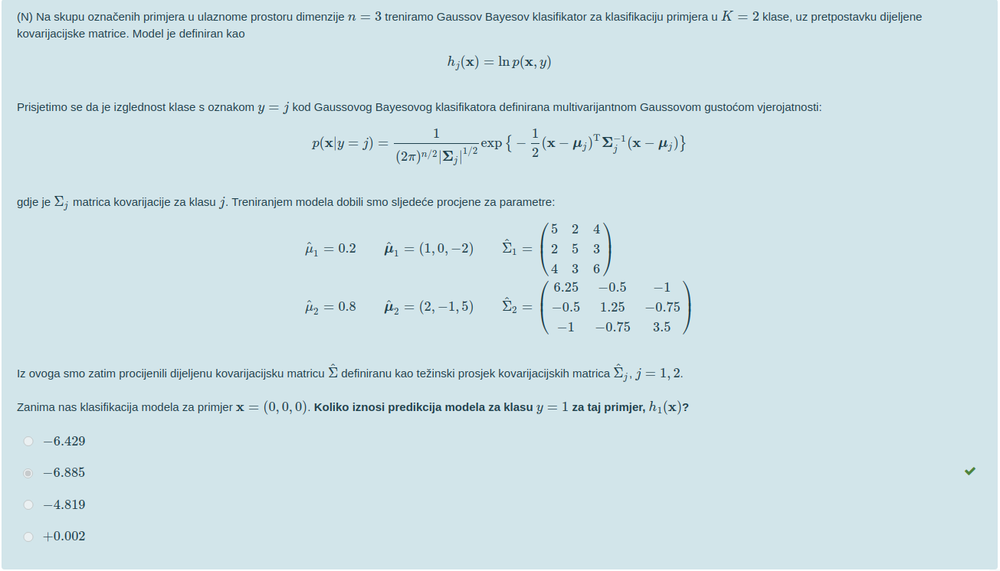 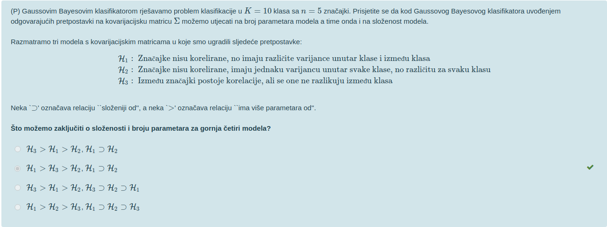 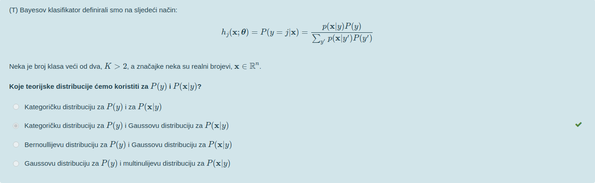 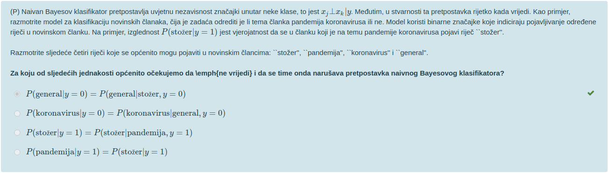 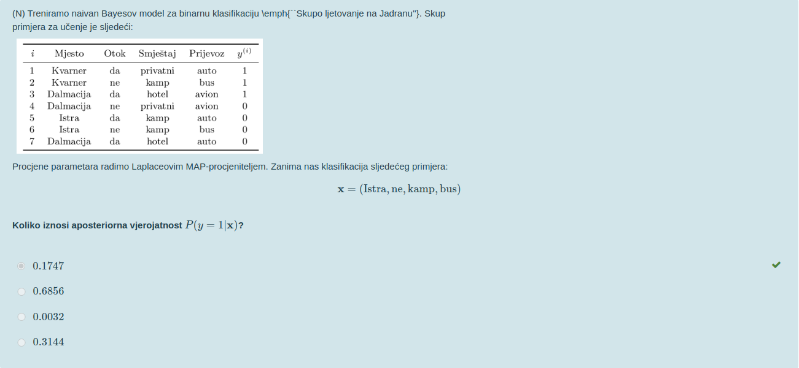 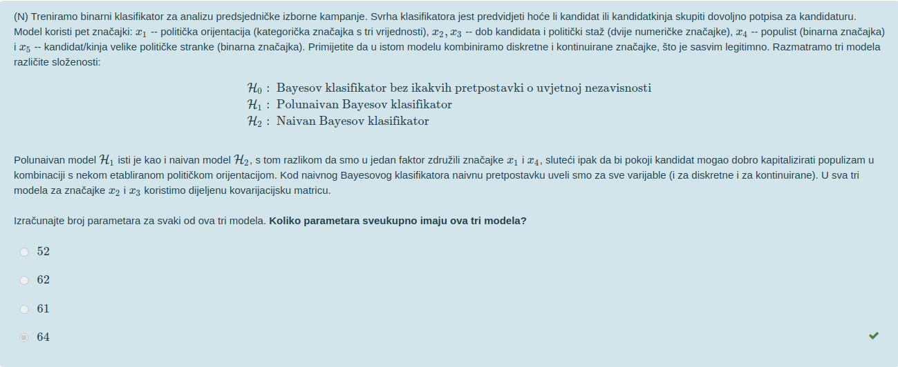 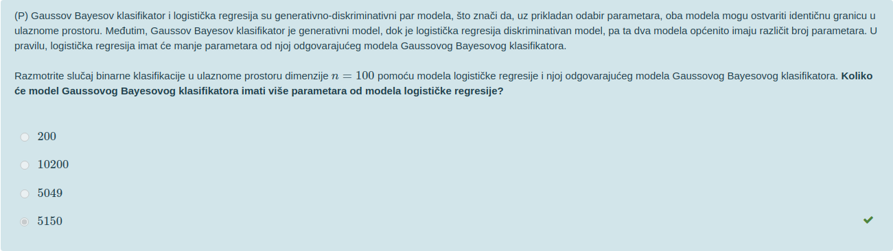 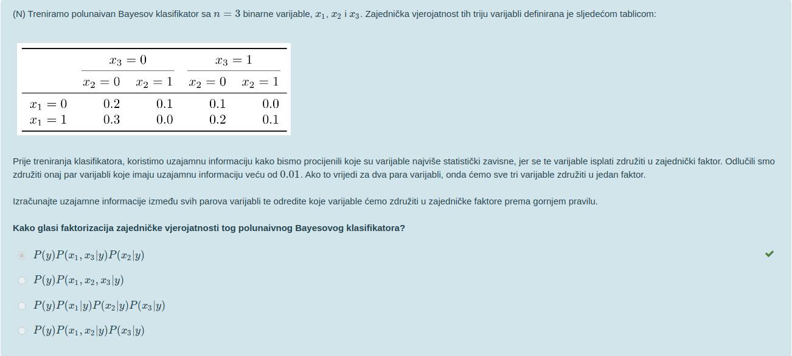
rs50113 Jesam ja jedini koji se sjeća da je šnajder na predavanjima govorio da će na ovim zadnjim moodle blicevima staviti postupak?
Amon Then again, rekao je i da će ovi zadnji moodle blicevi biti objavljeni na vrijeme… Yet here we are
Amon Tako je, a što se njihovih bodovanja tiče, ja sam ovo od 3:03 - 3:25 shvatio kao “Isprike što kasnimo, ali bar ćete imati više bodova”. Eh, nisam bio u pravu. To je trebalo značiti dobit ćete još više bonus bodova koji će se rezati na 5.
Stark … sto je doslovno to sto to znaci.
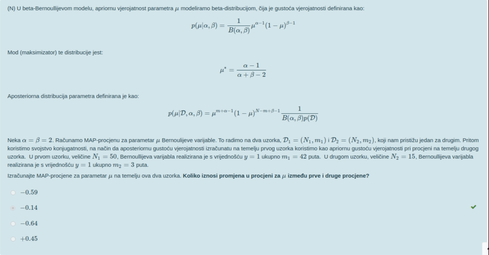 kako se racuna ovaj zadatak? kako racunamo beta fju?
enaiks taj je rješen ovdje https://docs.google.com/document/d/15drigevvwo3wOvZ3uFZgCAO2hgEHdCUa-a1DTMWV7_k/edit
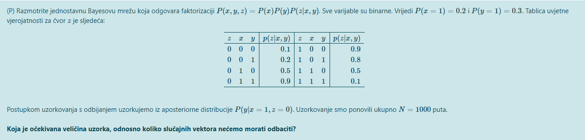 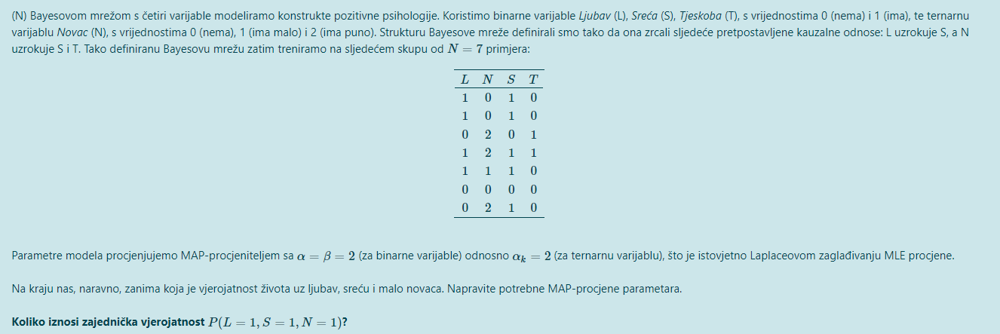
Jel zna netko kako se ova dva zadatka rjesavaju?
bearyn 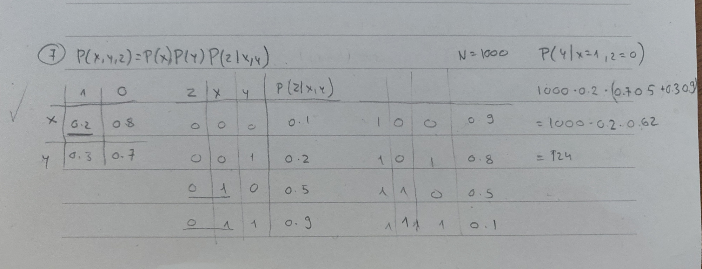 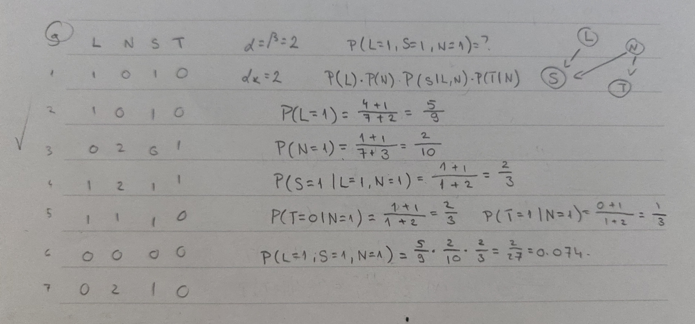 Javi ako ti nije jasan postupak
zaba Samo jedno pitanje za ovaj s L, S, N, T. Kad se racuna p(S=1|L=1, N=1), u nazivniku N predstavlja ukupan broj primjera za koje je L=1 i N=1? Da je npr bio jos jedan primjer recimo L=1, N=1, S=0, T=0, onda bi taj N u nazivniku bio jednak 2?
zaba Čemu služiju izračuni P(T=0 | N=1) i P(T=1 | N=1)?
zaba mozes objasniti u ovom xyz yadatku, kako si dosao do te formule?
zaba U ovom zadatku gdje se radi MAP procjena parametara zašto se, kada se računa P(N) i P(L), u nazivniku za Nkj uzima 7? Oba dvije varijable nemaju roditelje (uvjetovane varijable) i zar nije onda Nkj=0?
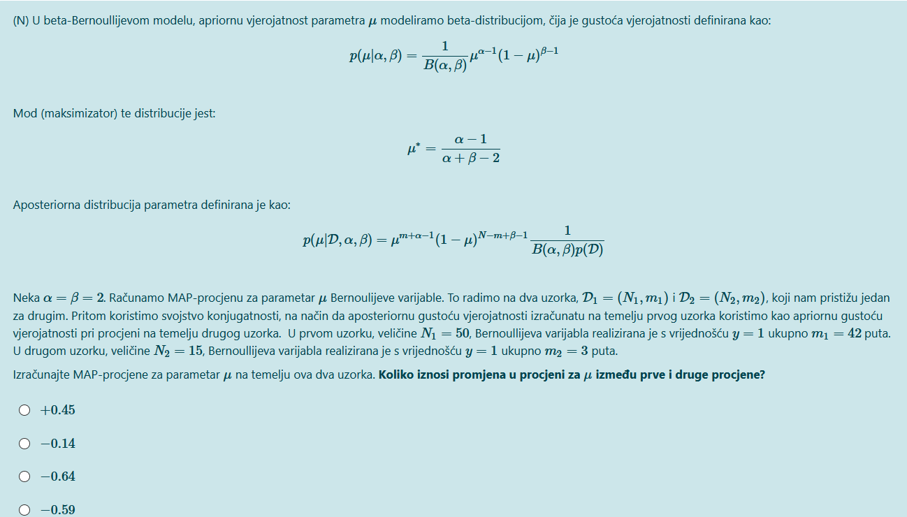 kako se rješava ovaj zadatak?
Zabe u onom zajednickom dokumentu imas taj zadatak rijesen